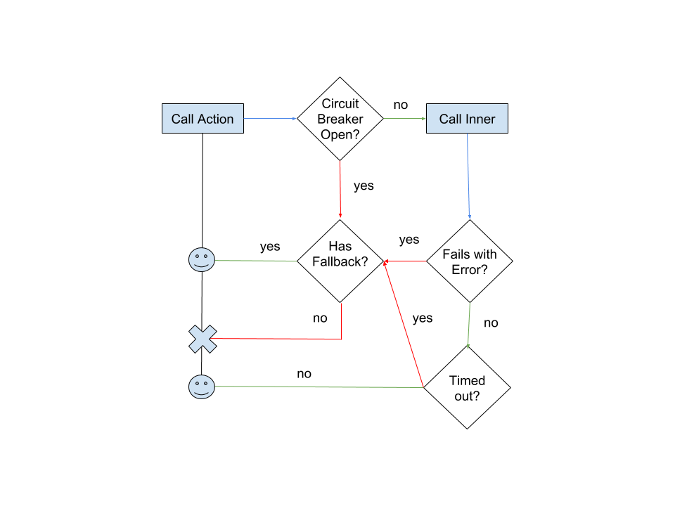
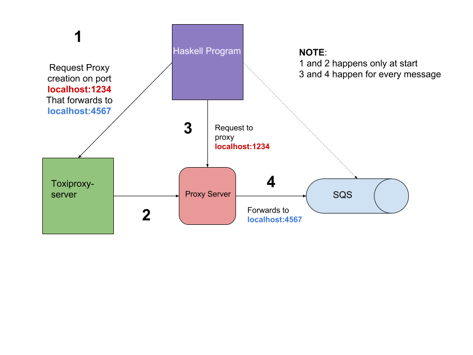

Rock-Solid Haskell Services
LambdaConf 2018 - Boulder, CO
Agenda
- Introduction/Setup
- Start with a solid foundation (Custom Prelude)
- Standarizing your team workflow
- Managing configuration values succintly
- Define your application in layers
- Model sensitive components as reliable processes
- Dealing with flaky integration points
- AWS in your box
- Adding chaos to the mix
Introduction/Setup
Start with a solid foundation
Why go with a custom Prelude?
- Most production Haskell code is built over a set of well known libraries
(
bytestring,text,deepseq, etc.) - Defaults allow developers to use dangerous APIs that are partial
(e.g.
head,tail, etc.) - Defaults use non-performant data structures (e.g.
List,String) by default
What options are available?
Getting started with RIO
Go to project 1-small-program in the workshop repository
Implement a small program using RIO
Standarizing your team workflow
Why to standarize: A tale about CI breakages
Makefiles
A set of tools to keep code tidy
- hlint
- refactor
- stylish-haskell
- brittany or hindent
stack install hlint refactor stylish-haskell brittany
Fast development using ghcid
make -f make/dev ghcid
BREAK
Managing configuration values succintly
12Factor
Ideally you want your application to follow a 12factor mantra
Strict separation of config from code
Configuration varies substantially across deploys, code does not
Strategies to Config
- Configuration File(s)
- Environment Variables
- CLI options
Should we pick one, or should we use more than one approach?
Managing Application Config with etc
- Supports configuration files, environment variables and CLI options
- Defines a spec for all your application settings (one canonical location for all config related decissions)
- Merges configuration values from all sources, prioritizes them by specificity and provides a unified way to gather them
Showcase example
Exercise
Let's do some coding in 2-config-program
Define your application in layers
How do I design my app?
- Should I just pass parameters for everything and work in
IO ()? - Should I use monad transformers?
- Should I use free monads?
Why not bit of everything? each of them work for a particular context of your application
Layer 1
The RIO model, build a ReaderT with an environment
that contains capabilities for functions:
data App
= App { appLogFunc :: !LogFunc
, appDbPool :: !(Pool Conn)
}
main :: IO ()
main = do
app <- buildApp
runRIO app businessMain
Layer 2
Define contracts on your app environment values
class HasFuncEnv env where
logFuncL :: Lens' env LogFunc
logInfo
:: (HasLogFunc env, MonadReader env m)
=> Utf8Builder -> m ()
traceCall
:: (HasLogFunc env, MonadReader env m)
=> Text -> (m b) -> m b
traceCall name action =
logInfo $ "start function call " <> display name
result <- action
logInfo $ "finished function call " <> display name
businessMain :: RIO App ()
businessMain = do
traceCall "performing other initialization"
internalFunction
Layer 3
This last layer contains functions that receieve all the input parameters as values (from layer 2) and performs some transformation or instruction around what to do next.
Layer 0
Building an environment for your application is not a simple task when using ghcid
- What happens when you are allocating multiple resources (threads, connections, file handles), how do you clean them up?
- How do you make sure your application is completely discarded and built a new on every change?
The resource pyramid
withLogFunc logOptions $ \appLogFunc ->
withPool createConn dropConn $ \appPool ->
withMetrics metrcisConfig $ \appMetrics -> do
let app = Application { appLogFunc, appPool, appMetrics }
ComponentM
A library that:
- Composes components together with cleanup semantics
- Manages setup/teardown on failures on initialization or teardown
- Parallelizes the initialization of components
Exercise
Lets revisit the config program with componentm
Model sensitive components as reliable processes
Dealing with errors
- What happens when:
- the database fails?
- the network falls down?
- your node runs out of memory?
- Does one exception in a component of your system affects others?
- Is your application up and healthy after the all the dependency errors are gone?
Use async/threads (processes) to contain error propagation
- If exceptions happen in one Process, it won't stop the others
- If Process die, what's next?
Approach: Have a restarter thread
Naive approach, implement a restart thread
withRestarter :: IO () -> IO (Async ())
withRestarter run =
async $ fix $ \recur -> do
runAsync <- async run
result <- waitCatch runAsync
case result of
Left err -> recur
Right _ -> return ()
Why is this not ideal?
- Depending on the
runsub-routine you may affect other systems, e.g. HTTP request - There is no limits around how many restarts make sense
- There is no telemetry out of the box
Using OTP Supervisors
This technique has been tackled before by Erlang, in specific OTP Supervisors, they:
- Offer static values that represent restart strategies
- Allows you to link workers together and restart all of them at once, or just the failing ones
- Allows you to compose reliable sub-systems together through Supervision Trees
- Keeps telemetry around all the things that can go wrong
Worker Restart Strategies
- Permanent: The supervised process is always restarted on termination
- Transient: The supervised process is restarted on failure only
- Temporary: The supervised process is never restarted (
forkIObehavior)
Supervisor Restart Strategies (OneForOne)

Supervisor Restart Strategies (OneForAll)

Examples over code
Go to producer-consumers project in repository
Exercise
Experiment with different strategies for restart in both supervisor and workers
BREAK
Dealing with flaky integration points
Disclaimer
This section is heavily inspired by Mike Nygard's excellent "Release It" book, if you want to get more details about these concepts, be sure to read this book.
Defining impulses and strain
- Impulses are rapid shocks to the system (e.g. a DoS attack, black friday online sales)
- Strain is produced by stress over time to the system (e.g. slow responses from credit card service)
- Strains produce Cracks in your system
Strain manifestations
- Unresponsive application
- Slow spike in RAM on web server
- Excess I/O Rate on the database
- etc.
Common terminology
- Fault – A condition that creates an incorrect state in your software (bug, edge case)
- Error – Visibly incorrect behavior. Something doesn't work the way it supposed to
- Failure – An unresponsive system
How cracks propagate
Triggering a fault opens the crack. Faults become errors, and errors provoke failures. That's how the cracks propagate
Common sources of strain
- Lack of timeouts on outgoing requests
- Resource pools get drained because of failures on lower layers of the stack
- Resource allocation exaustion, how many open files/ports can your program have at a time?
- Not limiting sizes of resources (Infinite
TQueue) - Not limiting sizes of SQL queries
Timeout
- Immediately retrying an operation is probably a bad idea; it's likely going to fail again. Not often is a "transient error"
- Consider delayed retries (with jitter times)
Circuit Breakers
This abstraction keeps track of a state of a 3rd party system, if the third party system fails a number of times, the breaker it's marked as "Open", meaning any requests is going to be failed immediately, not causing strain in the sub-system.
After a timeout, a canary request is performed, if it works as expected, the circuit is open, if not the breaker is kept open until the next timeout.
Circuit Breakers
Mitigation strategies
- Timeouts: everytime you are using an allocated resource, use a timeout (even on DB connections)
- When interacting with 3rd party APIs, make sure you use Circuit Breakers to fail fast when 3rd party systems are down
AWS in your box
- We are going to use
localstackto experiment with SQS and SNS
Install localstack
We are going to use localstack, a test/mocking framework for AWS applications
Execute docker-compose up in the cloud-crawler project
Anatomy of a crawler application
.
└── crawler_url_topic (sns)
├── crawler_summary_consumer (sqs)
└── crawler_url_queue (haskell program)
└── consumer
├── worker-1
└── worker-2
- Crawler worker pushes to domain stats worker
Adding chaos to the mix
Challenge
So far we have talked about how to make software less fragile, but how do we make sure this is the case?
Innoculate your system
To test our system recovers succintly after errors we can try building components with toxic testing in mind
Toxiproxy
With toxiproxy we can create a controlled miss-behaving proxy that sits in the middle between your program and its dependencies, it can:
- Add latency to a connection (upstream/downstream)
- Add jitter/noise to the contents of a connection
- Reduce bandwith to a maximum number of kilobytes per second
- Delay closing TCP connections
- Add big variation to TPC packets sizes and delays them
Lets explore how to include toxiproxy in our project
How does it work?
That's all for today!
Thanks for attending 👋
Keep in touch!